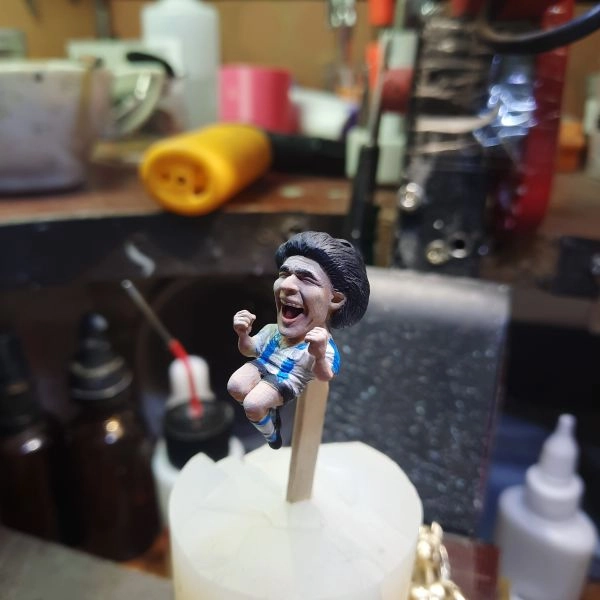
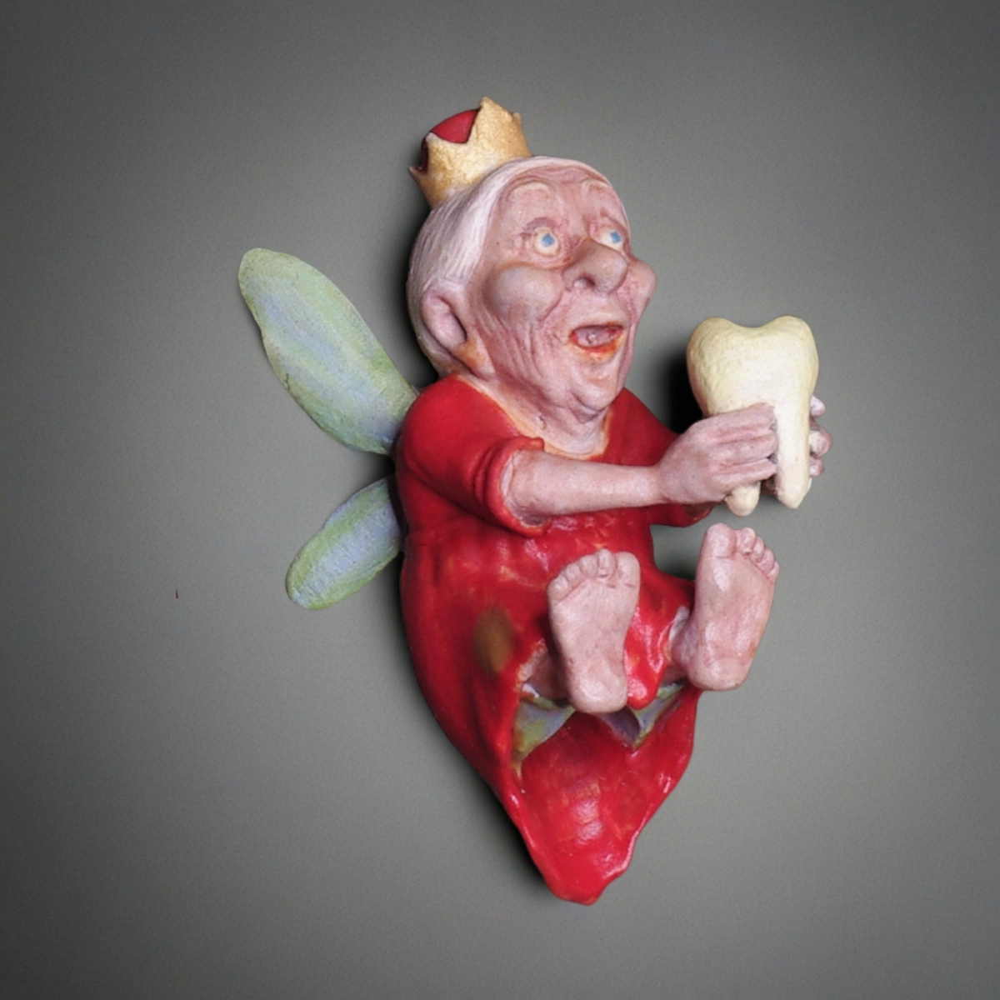
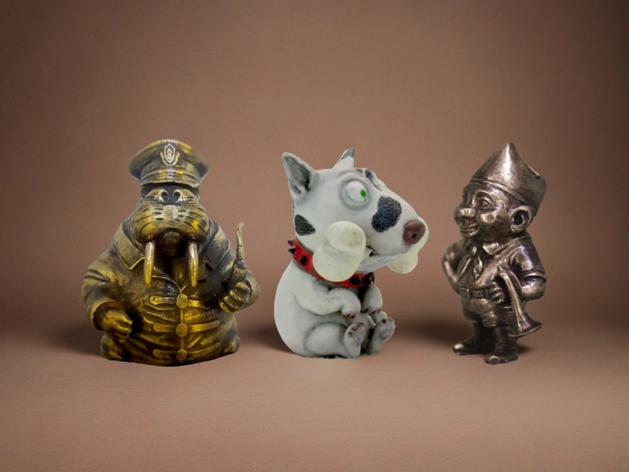

Меня зовут Михаил Гусаров. Я ювелир.
Впервые за ювелирный стол я сел в 16 лет, а постоянно работаю с 20. Сейчас мне 51, и всё это время ремесло для меня — не случайное занятие и не побочная история, а основное дело жизни. Так что да, в этом смысле я человек увлечённый и, наверное, по-хорошему фанат своего дела.
Для меня всегда были важны не только металл и техника сами по себе, а форма, характер вещи, фактура, образ и то чувство, которое остаётся от предмета в руке. Поэтому меня естественно тянуло к мелкой пластике и к вещам чуть крупнее стандартной ювелирки. Темлячная бусина как раз и стала для меня таким форматом — здесь можно соединить ювелирную точность, объём, материал, образ, цвет и фактуру, но при этом не потерять прикладной смысл вещи. По сути, это и маленькая пластика, и бусина на темляк, и бусина для ножа одновременно.
Если вы только знакомитесь с темой, начать лучше всего со статьи «Что такое темлячная бусина»: там я подробнее разбираю, чем такая бусина отличается от обычного аксессуара, как она работает на темляке и почему для меня это не просто декор, а маленькая вещь с характером.
Как я работаю

Я работаю в одиночку, поэтому со временем пришлось освоить практически весь цикл целиком: 3D-моделирование, работу с воском и моделями, литьё, изготовление серийных моделей, обработку металла, закрепку камня, ручную покраску, химические процессы, пайку, шлифовку, полировку, гравировку и многое другое.
Для меня это не набор отдельных навыков ради списка, а единый ремесленный язык. Чем больше умеешь, тем свободнее можешь довести вещь до того образа, который у тебя в голове.
Что для меня самое важное в бусине
Для меня техника, детализация и всё остальное — это не самоцель, а средство исполнения. Чем больше навыков, тем проще добиться того, что у тебя в голове.
А самое большое удовольствие — когда бусина оживает.
Когда это уже не просто качественно сделанная маленькая вещь, а образ с характером, который вызывает интерес и эмоцию. Именно это для меня самое сложное и самое важное. Не просто аккуратно сделать. Не просто технически справиться. А добиться того, чтобы в вещи появилась жизнь.
Если бусина вызывает отклик не только качеством работы и мелкими деталями, а чем-то большим — значит, всё получилось.
Как я подхожу к материалам

У меня нет одного “любимого материала вообще”. Материал всегда зависит от задачи.
Иногда слишком тонкие вещи, которые нужны по смыслу, можно передать только в металле. Иногда модель по-настоящему оживает только в патине. А иногда, наоборот, ей нужен цвет — и тогда работать можно не только с металлом.
Для меня материал не самоцель, а способ точнее раскрыть образ. Где-то нужна тяжесть и плотность металла. Где-то — живая поверхность и глубина патины. Где-то — цвет, который без других материалов просто не даст нужного эффекта.
Если вам интересна уже не только сама бусина, но и практическая сторона темляка, шнура и сборки, посмотрите материал «Что такое паракорд и какие инструменты нужны для плетения». А все прикладные статьи по узлам, плетению и темлякам собраны в разделе «Мастер-классы по темлякам».
Какие образы мне интересны
Мне трудно заранее сказать, какие именно образы мне интереснее всего делать. Скорее, меня цепляет то, в чём есть отклик и шанс сделать вещь живой.
Это напрямую связано с тем, что для меня вообще важно в бусине: не просто форма, а характер, настроение и внутреннее напряжение образа. Иногда это может быть что-то гротескное, иногда ироничное, иногда более жёсткое, иногда просто пластически сильное. Здесь для меня важнее не жанр сам по себе, а то, есть ли в вещи энергия и может ли она зацепить.
Отчасти поэтому мне интересна и сама история темы: темлячная бусина давно перестала быть только утилитарной деталью и постепенно стала отдельной маленькой пластикой. Об этом подробнее можно почитать в статье «История темлячных бусин».
Что в итоге получается
Мне интересно делать вещи, которые не выглядят безликими.
Даже если формат маленький, предмет всё равно может иметь вес, пластику, настроение и характер. Именно поэтому я смотрю на темлячную бусину не как на мелкий аксессуар, а как на маленький объект, в котором должны работать форма, поверхность, материал и образ.
Для кого-то это будет бусина на нож, для кого-то — бусина на темляк, для кого-то — деталь темляка для ножа или элемент повседневного набора, а для кого-то — небольшая коллекционная миниатюра. Мне важно, чтобы в любом из этих случаев вещь оставалась живой, собранной и не безликой.
Для кого это
Мои работы обычно интересны тем, кому важны не только функция и аккуратность исполнения, но и характер вещи.
- человеку, который подбирает бусину на темляк;
- тому, кто ищет бусину для ножа или деталь для темляка ножа;
- любителю кастомных деталей и продуманных аксессуаров;
- коллекционеру миниатюр и авторских вещей;
- тому, кто ценит ручную работу и характер предмета.
Если вам ближе именно практический выбор — по размеру, весу, отверстию и сочетанию с ножом, удобнее сразу перейти к статье «Как выбрать темлячную бусину».
Что делать дальше
Если этот материал уже разобран, дальше лучше перейти к ближайшим связанным темам — без длинного списка и лишних повторов.
FAQ
Это только бусины для ножа?
Нет. Темлячные бусины чаще всего используют как бусины на темляк и на нож, но их также можно носить как брелоки, использовать как декоративные элементы или хранить отдельно как небольшие миниатюры.
Подойдут ли такие бусины для паракорда и темляка?
Во многих случаях да, но всё зависит от конкретной модели, толщины шнура и диаметра отверстия. Если бусина нужна именно для темляка из паракорда или для ножа, лучше заранее смотреть размеры и общий характер будущей сборки. Базово разобраться в теме шнура можно в статье о паракорде и инструментах для плетения.
Все изделия ручной работы?
Да. В мастерской важна именно ручная доводка: поверхность, патина, роспись, финальная проработка деталей и общий характер каждой модели.
Можно ли просто посмотреть без покупки?
Да. Блог и каталог открыты для просмотра, поэтому можно сначала разобраться в теме, посмотреть стили, материалы и подход мастерской, а уже потом решать, нужна ли конкретная модель.